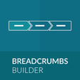
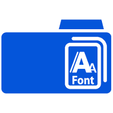
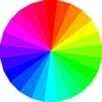

In this glossary, there will be information of the main website terms and glossary. So, if you don’t see the one that you know, don’t worry about it.
A
AJAX
Asynchronous Java script and XML. This is for web developing and what it basically does is that it allows data to come through the same page as the user without making the user reload the page. Because of this, it allows the website to perform more like a desktop type of program rather than a website kind of link.
B
BACKEND
What this is basically is the side of the website where it is hidden from the viewers. Normally in the backend it has information
BELLOW THE FOLD
what this means is that in a website term, the content is on the bottom bit of the page, so therefore the viewer will have to scroll down if they want to see the content.
BREADCRUMBS
This a section which is in the navigation area. You normally see this at the top of your webpage and what it does is that it shows the page and the subpage that you are currently on.
E.g. Home > food> Type of food> Quantity of food etc.
FACT; the term breadcrumbs comes from a kid’s story. Hansel and Gretel

BROWSER
Browsers is a type of software application which allows to access information from the web. Basically, software applications like Google Chrome, Internet Explorer, Firefox, Safari etc.
C
CACHE/CACHING
This is a type of file that can save or copied (when it is downloaded) the advantage to this is that when a user goes back to that same website then the page will loader faster than before.
CSS
Cascading Style Sheet. This is what defines the HTML page the files. This allows you to change the style, design, text and display of your HTML page file.
E
ELEMENTS
This is a type of block where you can be able to input either text, input another element or you can input both.
EM
EM is a type of font that is used for a text size. Like you have px which represents the size of a text, image or object. This is like that but for an example, if a size is 2em, it would be twice the size of the current size and 5em would be half of the size that is current.
F
FONT FAMILY
This represent the different font styles of the text. (E.g. Arial, serif or times new roman)
When it comes to the font, there are different type of font methods which allow you to tweak and edit the way your text looks. Font style, font weight etc.

H
HEXADECIMAL
The reason why this includes the word ‘’hex’’ is because when it comes to colours based in websites, they’re 16 based colours system. Which that then defines all the other colours online

HTML
Hypertext Markup Language. As it says in the name, this Is a primary type of language that is used for writing web pages and it is also used for providing content for the website you are creating.
HYPERLINK
Basic of these, they basically allow you to put a link on an image, video or text. Which will then send you to another web page.
I
IFRAME
this allows you to be able add one or more than webpage into a single web page. (one that is not in a frameset)
M
META TAG
This is a HTML type of tag which is on tope of your web page. (on top of your header) they are used to make a page specific. Be it a keyword, the author detail of the document or the page description.
N
NESTING
This is something where there is one Hypertext Markup Language is put in another type of element. After this, the element that had that HTML will have to reverse order from how it was opened.
P
PSEUDO ELEMENT
This adds a special type of effect with certain selectors.
V
VALIDATING
This I basically more of a verification, double check and it a code that makes sure the specification is okay and there are no errors in HTML.